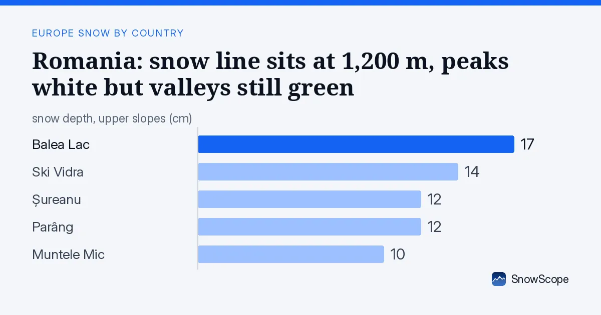

Romania: snow line sits at 1,200 m, peaks white but valleys still green
Romania's mountains show a sharp split between white and green. Above 1,200 m the ground is covered in snow, but below that height the valleys remain bare even after the past few days of fresh fall. This is how the early season looks when winter is just starting: snow clings to the high peaks while lower ground waits for deeper cold.
See the live snow forecast for Balea Lac in the SnowScope appSnow depth, powder alerts and the 3D map, free.
Where the snow line divides the country
Walk through the Carpathians right now and you will see the boundary clearly. At 1,200 m the snow begins. Below that point, grass and rock dominate; above it, white takes over. This sharp line is typical of November in Romania, when cold air sits in the high mountains but milder air still reaches the valleys.
The snow line marks the zone where our estimates the ground shifts from bare to covered. It is not a wall but a band of change, often just a few hundred metres wide. At this height the snowpack is still thin, so rocks poke through and you must watch your step if you venture off the marked paths.
| Resort | Snow depth | New snow, 72 h | Coming, next days | Top |
|---|---|---|---|---|
| Balea Lac | 17 cm | 5 cm | 15 cm | 2,032 m |
| Ski Vidra | 14 cm | 8 cm | 15 cm | 1,974 m |
| Șureanu | 12 cm | 9 cm | 20 cm | 1,968 m |
| Parâng | 12 cm | 8 cm | 17 cm | 1,768 m |
| Muntele Mic | 10 cm | 19 cm | 26 cm | 1,793 m |

Snow depth by altitude: the numbers change fast
Between 500 m and 1,000 m: almost no snow. Only 10% of the ground is white, and where it does lie the depth is zero. This is the foothills zone—green and brown.
Between 1,000 m and 1,500 m: snow begins to settle but is still scarce. Mean depth is 1 cm and cover reaches 46%. Thin, patchy snow on grass.
Between 1,500 m and 2,000 m: this is where the rapid change happens. Mean depth jumps to 5 cm and 86% of the ground is white. Ski routes and walking paths in this band are now snow-covered, though you can still see dark patches where the wind has scoured the ridges.
Above 2,000 m: the snow deepens to a mean of 16 cm with 99% cover. At Balea Lac (2,032 m) the depth is 17 cm. This is the reliable snow zone. Here, the layer is thick enough to hide the ground. These are the altitudes where the season truly begins.

Snow area has tripled in four days
On 18 November, snow covered 3,650 km² of Romania's high terrain. Today it covers 16,540 km²—more than four times larger. This jump shows how the last few days have been decisive for the season's start.
In just 24 hours (21 to 22 November) the white area grew by 9,190 km². This pace tells you that snow was falling widely across the mountains, not just on a few peaks. When snow spreads this fast in early November it means the air mass has finally turned cold enough to reach lower elevations too.
The hotspots: where the mountains caught the most
Three ranges stand out. The Retezat in the south-west received 24 cm in the past 72 hours—the deepest new snow of any range in Romania. The Rodna Mountains in the north-east came close with 22 cm. The Apuseni range in the west saw 16 cm. These three pulled away from the rest because they caught the moist flow head-on.
Among the ski areas, Muntele Mic has the most recent snow: 19 cm fell there in 72 hours.
What the next week looks like
Tomorrow, 23 November, is the heaviest snow day in the forecast. The forecast shows 16 cm across the region. After that, snow will slow and Thursday's total will likely be lower. By the end of this three-day spell (through 25 November), Șureanu could see 20 cm total, while Muntele Mic may reach 26 cm.
Looking ahead to the week of 30 November to 6 December, SnowScope shows another chance for significant snow—up to 51 cm possible in a few locations. That second round is still far off and uncertain, but it hints that more winter is coming.
Where to ski now and what to watch
Balea Lac remains the deepest resort at 17 cm, though that is still early-season shallow. Muntele Mic (10 cm today) has absorbed the most new snow and may catch up fast. Ski Vidra (14 cm) and Șureanu (12 cm) are both well-stocked for early runs.
The pattern in the past week is clear: snow came in bursts with quiet days between. That is typical of November. Watch for wind damage to the snowpack on exposed ridges. At these depths rocks are still present under the snow—a hazard early in the season. Check the official avalanche bulletin before you leave the piste.
Tips for skiers
- Ski above 1,500 m where snow cover is 86% or higher. Below this height expect grass, rocks, and thin patches.
- Muntele Mic and Șureanu are forecasted to gain the most snow in the next three days (26 cm and 20 cm). Plan accordingly if seeking fresh terrain.
- Avoid off-piste routes unless you have checked the official avalanche bulletin. Early-season snow is often shallow and unstable.
- On ridges and wind-scoured slopes at 1,500–2,000 m, rocks will be visible or just below the surface. Stay aware of foot placement.
- The snow line is sharp at 1,200 m today. Runs below this height may have bare patches; routes above it are more reliable.
About these numbers
Resort snow depths are the deepest snow on the resort's upper slopes on the date shown; they are estimates for an area, not a measurement at one point. Forecasts can change. Always read the official avalanche bulletin before going off-piste.
Cite this report
For research, teaching or the press: the numbers and charts are free to reuse under CC BY 4.0 with this citation.
SnowScope (2026), Romania: snow line sits at 1,200 m, peaks white but valleys still green, https://snowscope.app/blog/en/2026/11/romania-snow-line-22-november-2026.html, accessed 2026-11-22
SnowScope (Atlas Labs). (2026, November 22). Romania: snow line sits at 1,200 m, peaks white but valleys still green. SnowScope snow reports. https://snowscope.app/blog/en/2026/11/romania-snow-line-22-november-2026.html
BibTeX
@misc{snowscope2026romaniasnowline22novembe,
author = {{SnowScope (Atlas Labs)}},
title = {Romania: snow line sits at 1,200 m, peaks white but valleys still green},
year = {2026},
month = nov,
howpublished = {\url{https://snowscope.app/blog/en/2026/11/romania-snow-line-22-november-2026.html}},
note = {Published 2026-11-23 00:50 UTC; accessed 2026-11-22}
}· CC BY 4.0 · Methods, data and tools →
Balea Lac: snow and temperature by height, this winter vs last (tools) →
Follow Balea Lac
Free: a message when fresh snow is coming, and the forecast every morning.
More snow reports

Only Borovets and Bansko have a trace of snow at the top today, 2 cm each. A week ago Borovets had 11 cm. Day by day, and the one snowy day in the forecast.

From 13 to 19 November 2026 Slovenia got the most snow and kept it; Serbia and Croatia had a deep but short white weekend; Montenegro only on Durmitor; Bulgaria almost none. The ranking, with links to each country report.

Snow is falling on Slovenia's ski mountains today: about 37 cm on Kanin and 21 cm on Krvavec. Where the snow lies, how it compares with past winters, and the next snowy day.